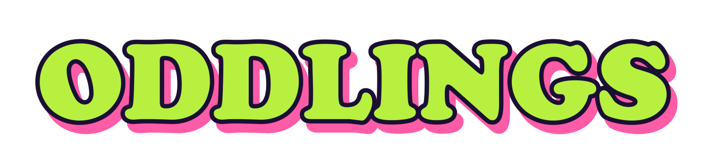
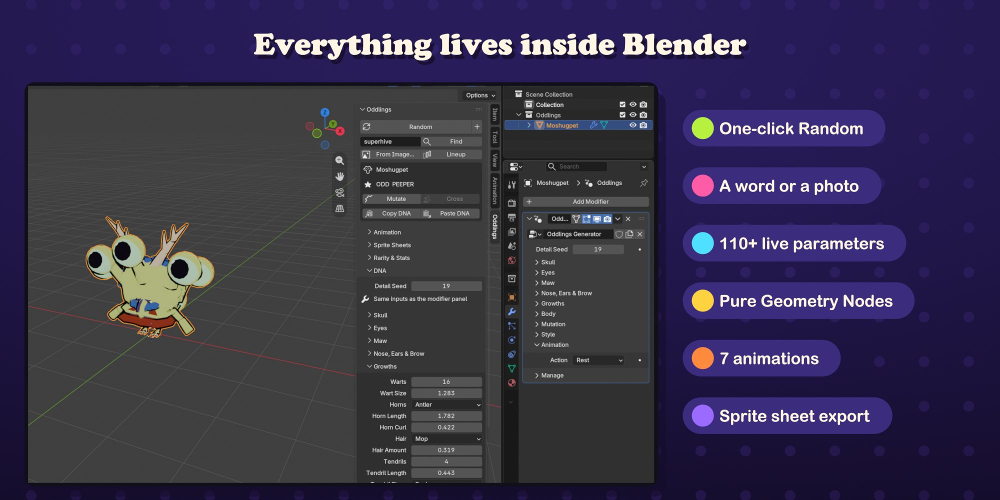
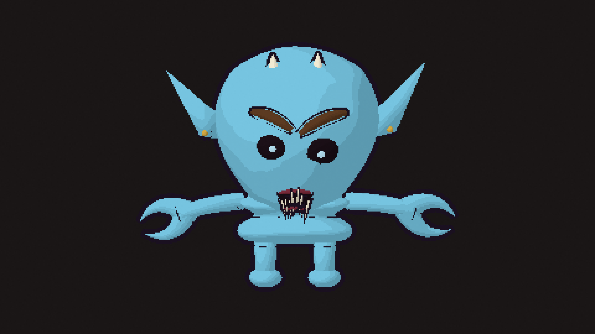

Hatch a creature from anything.
Click Random, type a word or drop in a photo, and a new toon creature hatches in your scene. Every oddling is a single Geometry Nodes object you can tweak live, animate with seven built-in actions and export as game-ready sprite sheets in one click.
Every creature in this little game is an atlas exported by Oddlings, untouched: 8 directions, 7 actions and 8 frames per action, 64 px pixel art. The game reads the frames straight from the Aseprite-style JSON that comes with each atlas.
Every click picks one of a billion seeds and hatches a brand-new creature. The + button adds another one next to it.
Type grumpy, your cat's name or a number. The same text always hatches the same creature, so you can share them.
Its outline becomes the head, dark spots become eyes and its colours paint the skin. A potato makes a very convincing oddling.
Each oddling is one mesh object with one Geometry Nodes modifier. Its DNA is that modifier's inputs: 111 parameters in eight groups, from Skull, Eyes and Maw to Growths, Body, Mutation and Style. Drag any of them and the creature changes instantly, in the sidebar or right in the modifier panel.

The animation is procedural, inside the same node tree, and plays from the scene frame. One click picks an action, fits the timeline to one cycle and plays it. Loop length, intensity and time offset are set per creature, so a crowd never moves in lockstep.
Pick the actions and press Export Sprite Sheets. Oddlings renders every action from every direction with an orthographic camera and saves the sheets with a JSON file.

Recorded in Blender 5.2: install, hatch, a word, a photo, the DNA, lineup and cross, animations, sprite sheets and pixel renders.
Requires Blender 5.2 or newer. Everything runs locally: no internet connection or account needed.
No. Everything is in the Oddlings sidebar tab. The node tree is there if you want to look inside.
Apply as Mesh gives a plain mesh in the pose you choose, which Blender's own exporters can save. Sprite sheets and pixel renders are PNG files with JSON.
Yes. A word, a name or a number always maps to the same seed, and the same seed always hatches the same creature.
Yes. Each creature is one atlas PNG and its JSON as Oddlings wrote them. The page only reads the frames, the pivot and the direction angles from the JSON.